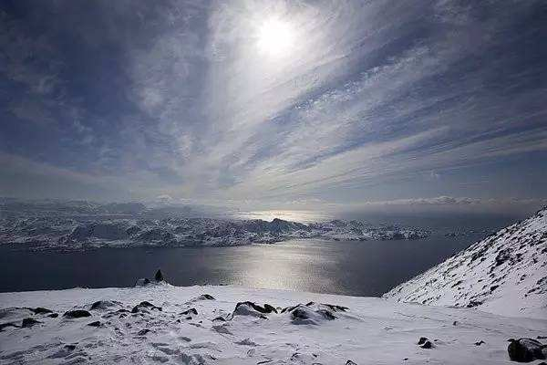
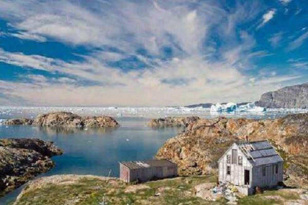
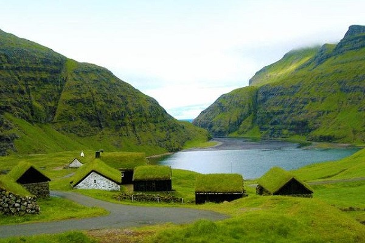
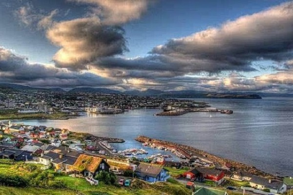
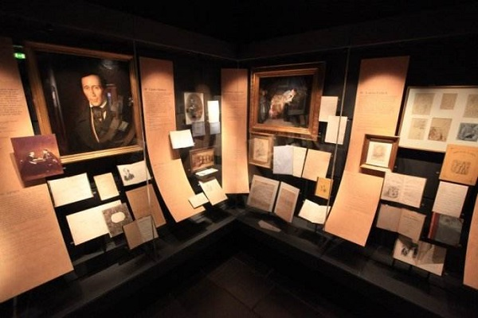
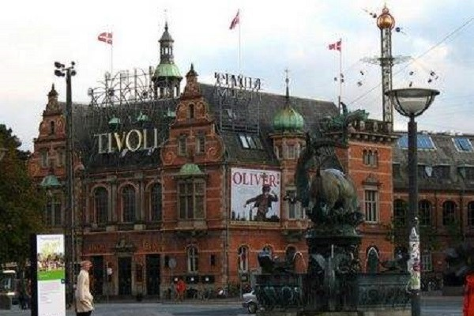

morly旅游网
说起北欧，总是会让人着迷，这里的阳光格外的温暖，古老的建筑充满着人文艺术气息，各种美丽的雕塑让前去探索的人无限的敬仰。
丹麦王国（丹麦语：Kongeriget Danmark，旧译为“嗹（lián）国”、“嗹马”），简称丹麦，北欧五国之一，是一个君主立宪制国家，拥有两个自治领地，法罗群岛和格陵兰。北部隔北海和波罗的海与瑞典和挪威相望，并与之合称为斯堪的纳维亚国家，南部与德国接壤，首都兼第一大城市是哥本哈根。
首都哥本哈根的城堡让人宛如在仙境一般，海边 的小美人鱼铜像静静地看着远方，似乎在保护着这座城市。
丹麦不仅有四季如春的城市，更有冰天雪地的城市，那就是格兰岛。你可以在格兰岛雪的世界里拉雪橇，可以用照相机拍下北极熊的模样。
格陵兰岛
在世界的北方，有一座世界上最大的岛屿，格陵兰岛。这个冰天雪地的大岛屿现在是丹麦的自治领，具有很高的自主权，但是同时又不甘于这点权限。对于格陵兰来说，奇特的历史让他们有着强烈的独立倾向。
 法罗群岛
法罗群岛（法罗语：Føroyar，丹麦语：Færøerne，英语：Faroe）是北欧国家丹麦的海外自治领地。地理位置介乎挪威海和北大西洋中间，处于挪威到冰岛之间距离一半的位置。
 安徒生博物馆
安徒生博物馆（H.C Andersson's House）位于丹麦菲茵岛中部的奥登塞市区。为纪念丹麦伟大童话作家安徒生（1805年－1875年）诞生100周年（1905年）而建。博物馆是一座红瓦白墙的平房，坐落在一条鹅卵石铺的街巷里。这里临街的一幢幢古老式样的建筑，使人感到仿佛回到了19世纪安徒生生活的年代。博物馆共有陈列室18间。
丽水特色食物
蒂沃利公园（Tivoli Gardens）位于丹麦首都哥本哈根闹市中心，占地20英亩，是丹麦著名的游乐园，有“童话之城”之称，每年4月22日至9月19日对外开放。

内容整理至网络，如有侵权，请联系我们！1255394075@qq.com